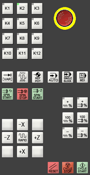
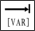
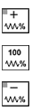
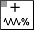
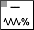
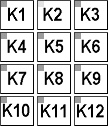
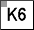
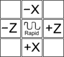

| 机床操作面板位于窗口的左侧或右侧，如下图所示。主要用于控制机床的运动和选择机床运行状态，
由模式选择旋钮、数控程序运行控制开关等多个部分组成，每一部分的详细说明如下。  MDA :  ��量选择.SINGL : SPINSTAR : 主轴正转. SPINSTAR : 主轴反转. SPINSTP : 主轴停止. RESET : 复位键. CYCLESTAR : 循环启动. CYCLESTOP : 循环停止. RAPID : 快速移动.  直线进给倍率调节键. 调节率大于100%, 灯亮, 调节率小于100% , 灯亮.  自定义功能键.进给使能键, 冷却液开关键.  选择要移动的轴.紧急停止旋钮. |